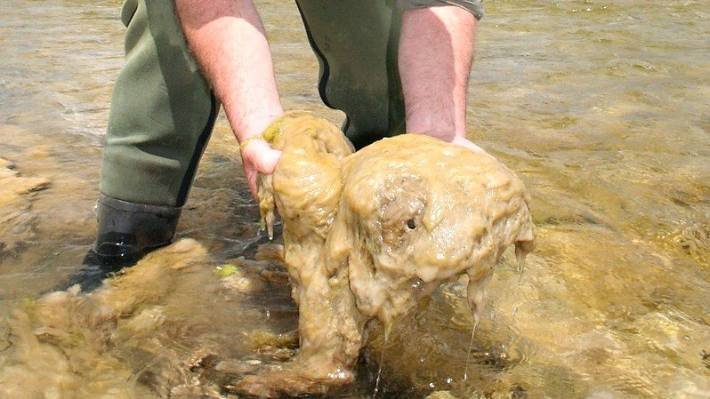

Didymo is a fresh water algae that grows in the south island of New Zealand. it is spread by people moving between waterways. Didymo covers rocks in a snot like slippery agae that causes issue for people and animal life. Didymo also effects the quialty of the water. The spread of Didymo can be stopped by cleaning footwear when traveling between different waterways.